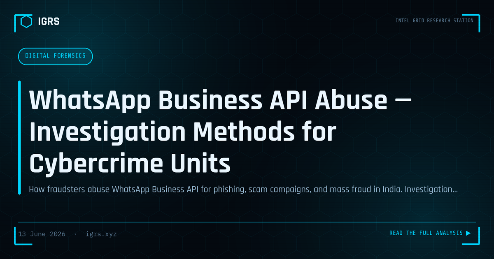

WhatsApp Business API Abuse — Investigation Methods for Cybercrime Units
Investigating WhatsApp Business API Abuse
The WhatsApp Business API enables organisations to message customers at scale, but it has also become a vector for fraud, phishing, and scams that exploit the platform's trust and reach. Investigating abuse of business messaging requires understanding how the system works and how criminals misuse it. This guide covers methods for investigating WhatsApp Business API abuse, relevant to Indian investigators and security teams.
How the Business API Is Abused
The WhatsApp Business API's scale and apparent legitimacy make it attractive to fraudsters. Abuse includes phishing messages impersonating banks and brands, scam campaigns leveraging the platform's trust, fraudulent customer-service impersonation, and the distribution of malicious links at scale. Because business messages can appear official, victims are more likely to trust them, making this abuse particularly effective and damaging.
Forms of Abuse
| Abuse Type | Method |
|---|---|
| Brand impersonation | Posing as a known business |
| Phishing campaigns | Malicious links via business messaging |
| Fake customer service | Impersonating support to extract data |
| Scam broadcasts | Mass fraudulent messaging |
Investigating the Source
Investigation begins with the abusive messages and the accounts sending them. Examining the business account details, the registered information, and the messaging patterns reveals the source. Because the Business API operates through providers and requires registration, there is often more identifying information available than with ordinary accounts. Tracing the account back through the provider, under legal authority, can identify those responsible for the abuse.
Analysing the Infrastructure
Abusive campaigns rely on infrastructure — the links they distribute, the sites those links lead to, and the systems that harvest data or deliver malware. Analysing this infrastructure, as in any phishing investigation, reveals the scope of the campaign and links related abuse. The malicious URLs distributed through WhatsApp can be investigated through domain and hosting analysis, connecting the messaging abuse to the broader fraudulent operation behind it.
Working with Platform and Providers
Investigating Business API abuse often requires cooperation with WhatsApp and the business solution providers through which the API is accessed. These parties hold registration and account information that, obtained under Section 94 BNSS, can identify those responsible. Reporting abuse also enables platform-level action to suspend abusive accounts. This cooperation is central to both investigation and disruption of organised abuse.
Legal Provisions
WhatsApp Business API abuse engages multiple legal provisions: Section 318 BNS (cheating) and Section 319 BNS (cheating by personation) for fraud, Section 66C and 66D IT Act (identity theft and personation) for impersonation, and Section 66D specifically for cheating by personation using a computer resource. Where brand impersonation is involved, trademark and related provisions may also apply. Electronic evidence is certified under Section 63 BSA.
Defending and Responding
For Indian investigators and organisations, addressing WhatsApp Business API abuse combines investigation — tracing accounts and infrastructure, working with the platform and providers, and applying the appropriate legal provisions — with defensive measures. Organisations whose brands are impersonated should monitor for abuse, report it promptly, and warn customers. As business messaging becomes a primary channel for legitimate communication in India, the abuse that exploits its trust and reach demands both effective investigation and proactive defence, protecting consumers from fraud that leverages one of the country's most widely used communication platforms.